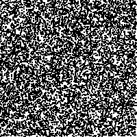
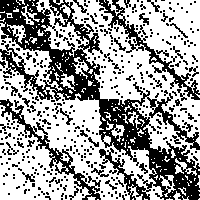
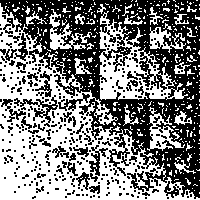
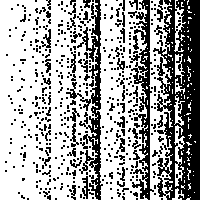

| The difficulty with Stewart's experiment
is that departures from uniform randomness in selecting the order of application
of the rules are expressed in some non-uniform fill of the gasket. |
| We see
some parts of the gasket filled more darkly, or some parts left empty. While it is
possible to learn to parse these figures, it is much simpler to read the
images generated by this IFS |
| T3(x, y) = (x/2, y/2) + (0, 1/2) |
T4(x, y) = (x/2, y/2) + (1/2, 1/2) |
| T1(x, y) = (x/2, y/2) |
T2(x, y) = (x/2, y/2) + (1/2, 0) |
|
| This IFS generates the filled-in unit square. Consequently, any departure from
uniform randomness will be visible through departures from uniform fill of the
square. |
| Here are some examples, all with 10000 points. |
|  |
|
 |
| uniform random sequence |
|
p1 = p4 = 0.1; p2 = p3 = 0.4 |
|  |
|
 |
| p1 = 0.1; p2 = p3 = p4 = 0.3 |
|
p1 = p3 = 0.1; p2 = p4 = 0.4 |
|